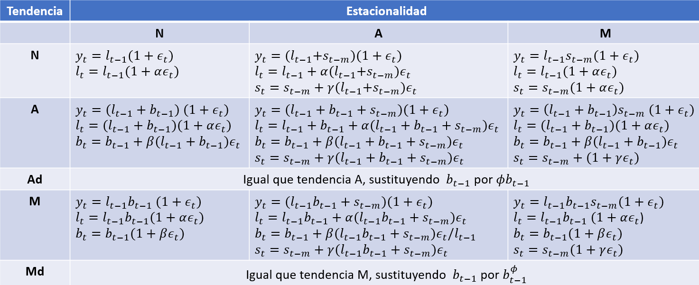
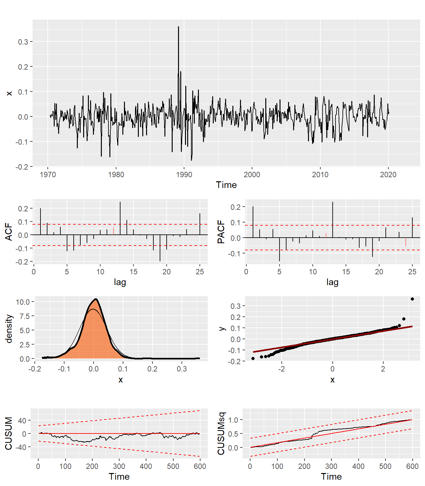
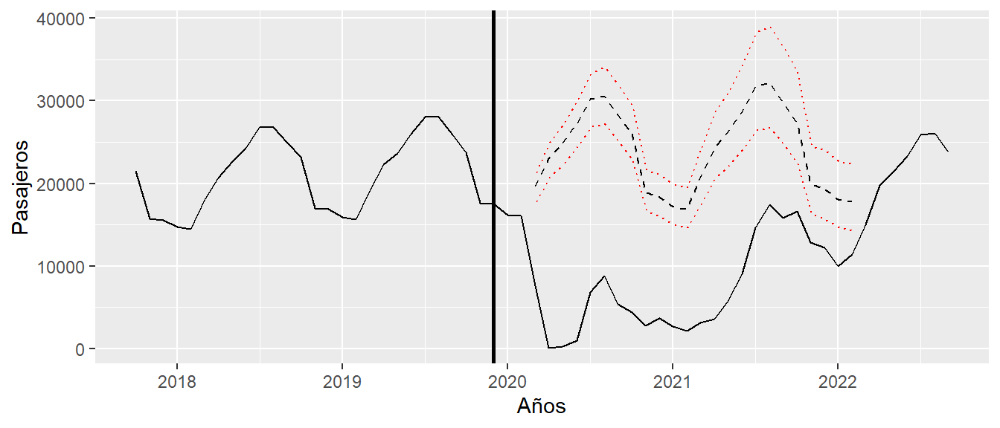
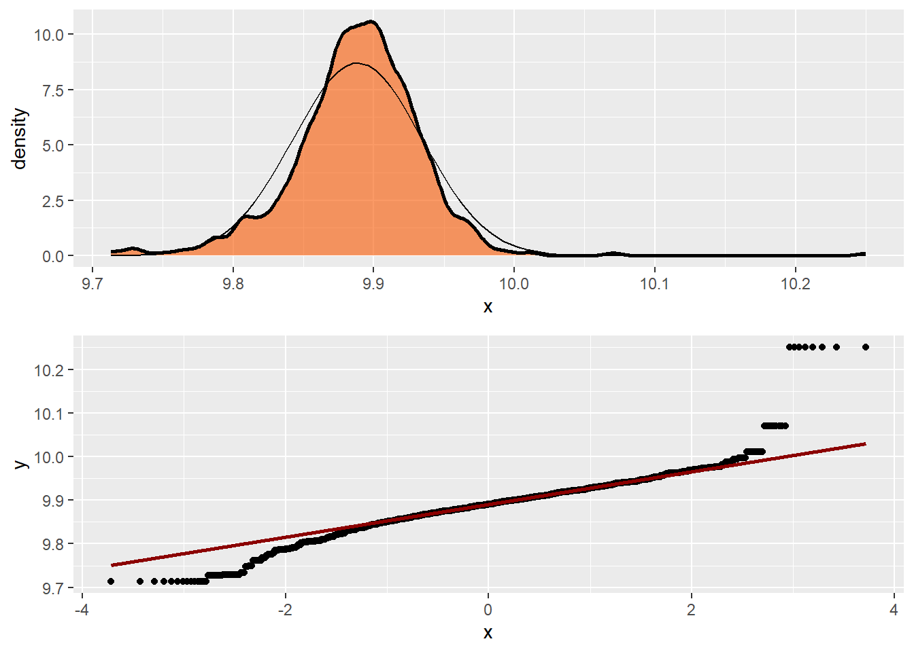
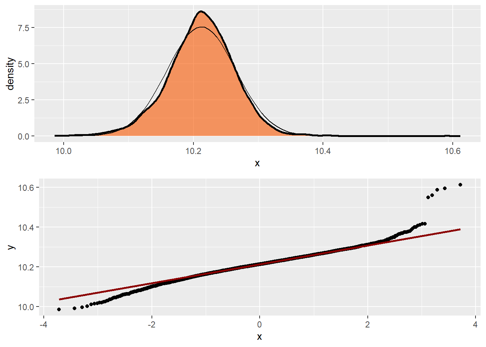
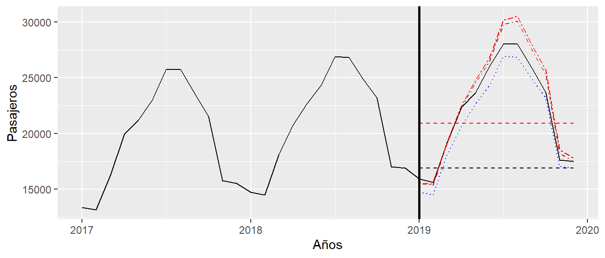

4 Suavizado exponencial en Espacio de los Estados
Hasta ahora hemos contemplado el suavizado exponencial como un método de predicción, es decir, como un conjunto de reglas más o menos inteligentes para predecir series temporales. En este capítulo los vamos a tratar como un modelo formal estadístico. Todos los métodos de suavizado exponencial vistos se pueden encuadrar dentro de un marco general que es el de Espacio de los Estados.
Existen múltiples formas de Espacio de los Estados. Por conveniencia, en este capítulo nos centraremos en la forma de Espacio de los Estados en forma de innovaciones, que tiene la peculiaridad de depender de un solo ruido aleatorio, también se suelen llamar sistemas con una sola fuente de ruido (Sigle Source of Error o SSOE en inglés). En el siguiente capítulo se aboradarán los modelos en forma de Espacio de los Estados con múltiples ruidos (Multiple Source of Error o MSOE) que se utilizarán en la especificación de otra familia de modelos de suavizado exponencial.
4.1 Modelos SSOE de Espacio de los Estados
La formulación con una sola fuente de ruido del modelo de espacio de los estados que vamos a utilizar en este capítulo se encuentra en la Ecuación 4.1.
\[ \begin{array}{rl} \text{Ecuación de observación:} & y_t = w x_{t-1} + \epsilon_t \\ \text{Ecuación de transición:} & x_{t} = F x_{t-1} + g \epsilon_{t} \end{array} \tag{4.1}\]
Dicho sistema está compuesto por dos ecuaciones ligadas entre sí por dos elementos, \(x_t\) y \(\epsilon\). La ecuación de transición refleja el comportamiento dinámico del sistema al conectar el vector de estados \(x_t\) de dimensión \(n\) con su pasado y una perturbación escalar \(\epsilon_t\), que se supone normal con media cero y varianza constante \(\sigma^2\). La ecuación de observación relaciona los datos de salida escalar \(y_t\) con los estados y la perturbación. Los demás elementos son las matrices del sistema de dimensiones apropiadas. En particular, \(F\) es una matriz cuadrada \(n\times n\), \(g\) es la matriz de ganancias \(n \times 1\) y \(w\) es un vector \(1 \times n\).
Para poder encajar los modelos no lineales es necesario generalizar el modelo, ver la Ecuación 4.2.
\[ \begin{array}{rl} \text{Ecuación de observación:} & y_t = w(x_{t-1}) + r(x_{t-1})\epsilon_t \\ \text{Ecuación de transición:} & x_{t} = f(x_{t-1}) + g(x_{t-1}) \epsilon_{t} \end{array} \tag{4.2}\]
La diferencia con el sistema lineal es que en esta ecuación \(f(x_{t-1})\), \(g(x_{t-1})\), \(w(x_{t-1})\) y \(r(x_{t-1})\) son funciones no lineales del vector de estados. Evidentemente, si se escogen funciones lineales y \(r(x_{t-1})=1\) se obtiene como caso particular la versión lineal en la Ecuación 4.1.
Hay un detalle que en principio puede parece trivial, pero que hace este sistema singular y especialmente fácil de tratar. Se trata de que hay una sola fuente de ruido aleatorio, \(\epsilon_t\). Esto hace que los estados sean observables sin ninguna incertidumbre y, con una sencilla manipulación y conocido el vector de estados inicial \(x_0\), se puedan obtener recursivamente dichos estados.
En efecto, si en el sistema lineal de la Ecuación 4.1 se despeja la perturbación de la ecuación de observación (\(\epsilon_t = y_t - w x_{t-1}\)) y se sustituye en la ecuación de transición tenemos que,
\[ x_t=F x_{t-1} + g (y_t - w x_{t-1}). \]
Dado un vector de estados inicial conocido \(x_0\), se puede calcular recursivamente toda la secuencia de estados.
En el modelo no lineal tenemos que \(\epsilon_t = [y_t - w(x_{t-1})]/r(x_{t-1})\) y
\[ x_t=f(x_{t-1}) + g(x_{t-1}) [y_t - w(x_{t-1})]/r(x_{t-1}). \]
4.2 Modelos de suavizado exponencial en forma de Espacio de los Estados
El modelo de suavizado exponencial está formado por combinaciones particulares de los componentes que se consideren apropiados en cada caso. A continuación se consideran los modelos más habituales para cada componente con su forma de espacio de los estados que se encuentran disponibles en el paquete UComp.
Los componentes que vamos a considerar son el nivel \(l_t\), pendiente \(b_t\), estacionalidad \(s_t\) y ruido \(\epsilon_t\). En general los modelos particulares de los componentes dependen de si se incluyen estacionalidad y de si el ruido es aditivo o multiplicativo.
Las formas de espacio de los estados de las quince combinaciones posibles con ruido aditivo se encuentran en la Figura 4.1.
Todos los modelos con algún componente multiplicativo tienen necesariamente una representación en forma de espacio de estados no lineales de acuerdo con la Ecuación 4.2, el resto son lineales como en la Ecuación 4.1. La Figura 4.2 muestra las matrices del sistema de espacio de los estados lineal o no lineal con la que se puede representar cada uno de los que aparecen en la Figura 4.1. Por razones de espacio, los modelos no lineales con estacionalidad multiplicativa se muestran en la Figura 4.5. En todos ellos se ha utilizado la matriz de transición \(\Phi\) del componente estacional aditivo, cuya definición es la siguiente
\[ \Phi=\left[ \begin{array}{ccccc} 0 & 0 & \dots & 0 & 1\\ 1 & 0 & \dots & 0 & 0\\ 0 & 1 & \dots & 0 & 0\\ \vdots & \vdots & \ddots & \vdots & \vdots\\ 0 & 0 & \dots & 1 & 0 \end{array} \right]. \]
En el caso de los modelos con ruido multiplicativo todos son no lineales y se muestran en la Figura 4.3.

La Figura 4.4 muestra las matrices del sistema no lineal de espacio de los estados. Los modelos con estacionalidad multiplicativa se muestran en la Figura 4.5.
Finalmente, todos los modelos con estacionalidad multiplicativa se muestran en la Figura 4.5.
El lector puede comprobar que efectivamente las matrices del sistema de las tablas anteriores reproducen los modelos que efectivamente se quieren representar. A continuación se proponen dos ejemplos con sus soluciones.
Comprueba que efectivamente se obtiene el modelo ETS(A,A,A) utilizando las matrices del sistema de la Figura 4.2.
El sistema es lineal, por lo que se podrá escribir como
\[ \begin{array}{l} y_t = \left[\begin{array}{cccccc} 1 & 1 & 0 & 0 & 0 & 1\end{array} \right] x_{t-1} + \epsilon_t \\ x_t=\left[\begin{array}{c} l_t \\ b_t \\ s_t \\ s_{t-1} \\ s_{t-2} \\ s_{t-3}\end{array} \right] = \left[\begin{array}{cccccc} 1 & 1 & 0 & 0 & 0 & 0 \\ 0 & 1 & 0 & 0 & 0 & 0 \\ 0 & 0 & 0 & 0 & 0 & 1 \\ 0 & 0 & 1 & 0 & 0 & 0 \\ 0 & 0 & 0 & 1 & 0 & 0 \\ 0 & 0 & 0 & 0 & 1 & 0 \\ \end{array} \right] \left[\begin{array}{c} l_{t-1} \\ b_{t-1} \\ s_{t-1} \\ s_{t-2} \\ s_{t-3} \\ s_{t-4}\end{array} \right] + \left[\begin{array}{c} \alpha \\ \beta \\ \gamma \\ 0 \\ 0 \\ 0\end{array} \right] \epsilon_t \end{array}. \]
Operando tenemos las ecuaciones de la Figura 4.1:
\[ \begin{array}{l} y_t=l_{t-1}+b_{t-1}+s_{t-4} \\ l_t=l_{t-1}+b_{t-1}+\alpha \epsilon_t \\ b_t=b_{t-1}+\beta \epsilon_t \\ s_t=s_{t-4}+\gamma \epsilon_t \end{array} \]
Comprueba que efectivamente se obtiene el modelo ETS(M,M,M) utilizando las matrices del sistema de la Figura 4.5.
El sistema es no lineal, por lo que tendremos que utilizar el sistema de la Ecuación 4.1.
\[ \begin{array}{l} y_t=l_{t-1}b_{t-1}s_{t-4}+l_{t-1}b_{t-1}s_{t-4}\epsilon_t \\ x_t=\left[\begin{array}{c} l_t \\ b_t \\ s_t \\ s_{t-1} \\ s_{t-2} \\ s_{t-3}\end{array} \right] = \left[\begin{array}{cccccc} b_{t-1} & 0 & 0 & 0 & 0 & 0 \\ 0 & 1 & 0 & 0 & 0 & 0 \\ 0 & 0 & 0 & 0 & 0 & 1 \\ 0 & 0 & 1 & 0 & 0 & 0 \\ 0 & 0 & 0 & 1 & 0 & 0 \\ 0 & 0 & 0 & 0 & 1 & 0 \\ \end{array} \right] \left[\begin{array}{c} l_{t-1} \\ b_{t-1} \\ s_{t-1} \\ s_{t-2} \\ s_{t-3} \\ s_{t-4}\end{array} \right] + \left[\begin{array}{c} \alpha l_{t-1}b_{t-1} \\ \beta b_{t-1} \\ \gamma s_{t-4} \\ 0 \\ 0 \\ 0\end{array} \right] \epsilon_t \end{array} \]
Operando tenemos las ecuaciones de la Figura 4.5:
\[ \begin{array}{l} y_t=l_{t-1}b_{t-1}s_{t-4}+l_{t-1}b_{t-1}s_{t-4}\epsilon_t=l_{t-1}b_{t-1}s_{t-4}(1+\epsilon_t) \\ l_t=l_{t-1}b_{t-1}+\alpha l_{t-1}b_{t-1} \epsilon_t = l_{t-1}b_{t-1}(1+\alpha \epsilon_t)\\ b_t=b_{t-1}+\beta b_{t-1}\epsilon_t = b_{t-1}(1+\beta \epsilon_t)\\ s_t=s_{t-4}+\gamma s_{t-4} \epsilon_t = s_{t-4}(1+\gamma \epsilon_t) \end{array} \]
Aunque se pueden usar las \(30\) combinaciones, los modelos con tendencia multiplicativa tienden a evitarse, por las dificultades de estimación y la escasa eficacia en la predicción.
Los parámetros no pueden tomar cualquier valor, sino que deben estar restringidos de forma que \(0<\alpha<1\), \(0<\beta<\alpha\), \(0<\gamma<1-\alpha\), \(0<\phi<1\), \(0<\sigma^2<\infty\). Algunas de estas restricciones no parecen lógicas porque provienen de la formulación explícita de los modelos como suavizados exponenciales. Puede haber otras restricciones basadas en regiones de admisibilidad de los parámetros (ver detalles en Hyndman et al., 2008).
4.3 Estimación
4.3.1 El principio de Máxima Verosimilitud
Cuando disponemos de una función de distribución dada, por ejemplo una gaussiana con media y varianzas conocidas (\(\mu\) y \(\sigma^2\), respectivamente), podemos obtener muestras aleatorias de la misma. Lo hemos hecho varias veces a lo largo de los capítulos anteriores. Asumiendo gaussianidad, la función se podría escribir como sigue
\[ p(y_t|\mu, \sigma^2) = (2\pi \sigma^2)^{-1/2} \exp \left[ -\frac{(y_t-\mu)^2}{2\sigma^2} \right]. \]
El lado izquierdo de la igualdad habría que leerlo como la función de densidad de la variable aleatoria \(y_t\) condicionada, es decir, dados unos valores fijos conocidos, de los parámetros \(\mu\) y \(\sigma^2\) de los que depende. De esta función se podrían extraer tantas muestras cuantas se desee.
El problema de estimación es justo el contrario, tenemos una muestra concreta conocida \(y_t\) que suponemos que se ha extraído de una distribución con unos parámetros desconocidos \(\mu\) y \(\sigma^2\). Es decir, el rol de la variable y las incógnitas se ha intercambiado. Ahora lo conocido es la muestra y lo desconocido son los parámetros. Esto se podría escribir como
\[ L(\mu, \sigma^2|y_t) = (2\pi \sigma^2)^{-1/2} \exp \left[ -\frac{(y_t-\mu)^2}{2\sigma^2} \right]. \]
Esta función de verosimilitud, que en realidad es la misma que la de densidad anterior, nos permite calcular probabilidades de combinaciones de los parámetros condicionados a la muestra de la que disponemos. Si buscamos los valores de \(\mu\) y \(\sigma^2\) que maximizan esta función estaríamos estimando esos valores que hace más verosímil, más probable, la aparición de la muestra concreta de la que disponemos. Esta es la estimación por máxima verosimilitud (MV).
Las dos funciones anteriores se han escrito para una sola muestra escalar \(y_t\). En el caso de disponer de \(T\) muestras independientes con la misma media y varianza, la verosimilitud conjunta de todas ellas (de un vector \(Y_T=\{y_1,y_2,\dots,y_T\}\)) será simplemente el producto de las individuales,
\[ L(\mu, \sigma^2|Y_T) = (2\pi \sigma^2)^{-T/2} \exp \left[ -\sum_{t=1}^T\frac{(y_t-\mu)^2}{2\sigma^2} \right]. \]
En el caso de que las muestras \(y_t\) no sean independientes, que será el caso más habitual, partiendo de la fórmula de la probabilidad conjunta que afirma que \(p(y_1,y_2)=p(y_1)p(y_2|y_1)\), podemos ver que para tres variables aleatorias tenemos
\[ p(y_1,y_2,y_3)=p(y_1,y_2)p(y_3|y_1,y_2)=p(y_1)p(y_2|y_1)p(y_3|y_1,y_2). \]
La generalización a \(T\) variables aleatorias conduce a que la probabilidad de toda la muestra se puede escribir como
\[ p(y_1,y_2,\dots,y_T)=p(Y_T)=\prod_{t=1}^Tp(y_t|Y_{t-1}), \tag{4.3}\]
donde cada término del producto es la probabilidad de cada observación condicionada a la información disponible hasta la observación anterior.
4.3.2 Estimación MV de modelos de espacio de los estados
Todos los modelos vistos en este capítulo dependen de una serie de parámetros, que en general, serán desconocidos cuando se estén analizando series temporales particulares. Estos parámetros son \(\alpha\), \(\beta\), \(\gamma\), \(\phi\) y \(\sigma^2\). Además, debemos recordar que el valor de los estados depende crucialmente del vector de estados inicial de los mismos, que se han considerado conocidos hasta el momento, pero que en casos reales no lo son. En muestras largas, el efecto de las condiciones iniciales tiende a diluirse, pero no sucede lo mismo con muestras cortas.
Todo lo dicho hasta el momento se ha hecho con el fin de poder establecer el tratamiento estadístico de los modelos sobre la base de la forma general de espacio de los estados, en lugar de tener que ir particularizando para cada modelo concreto. Así el resto del capítulo se referirá únicamente a la forma general de la Ecuación 4.1 y la Ecuación 4.2, entendiendo que los resultados son válidos para todos los casos particulares.
Dada la forma del modelo general lineal, que precisamente estipula una relación entre la cada observación y el pasado inmediato, tenemos que la distribución de cada \(y_t\) condicionado a su pasado es normal con media \(wx_{t-1}\) y varianza \(\sigma^2\). Si añadimos el supuesto de normalidad tenemos que
\[ p(y_t|Y_{t-1})= (2\pi \sigma^2)^{-1/2} \exp \left[ -\frac{(y_t-wx_{t-1})^2}{2\sigma^2} \right]= (2\pi \sigma^2)^{-1/2} \exp \left( -\frac{\epsilon_t^2}{2 \sigma^2} \right) \] La Ecuación 4.3 nos permite escribir la función de probabilidad de una forma sencilla,
\[ p(Y_t)= (2\pi \sigma^2)^{-T/2} \prod_{t=1}^T \exp \left( - \frac{\epsilon_t^2}{2\sigma^2} \right) \tag{4.4}\]
En el caso no lineal, tenemos que la distribución de cada \(y_t\) es normal con media \(w(x_{t-1})\) y varianza \(r(x_{t-1})^2\sigma^2\), por tanto la función de densidad de una observación es
\[ p(y_t|Y_{t-1})= [2\pi r(x_{t-1})^2 \sigma^2]^{-1/2} \exp \left[ \frac{[y_t-w(x_{t-1})]^2}{2r(x_{t-1})^2\sigma^2} \right]= \frac{p(\epsilon_t)}{|r(x_{t-1})|}, \] donde se toma el valor positivo de las raíz cuadrada de \(r(x_{t-1})^2\) mediante el valor absoluto, puesto que la medida debe ser una probabilidad. La probabilidad de toda la muestra es,
\[ p(Y_t)= (2\pi \sigma^2)^{-T/2} \left| \prod_{t=1}^T r(x_{t-1}) \right|^{-1} \prod_{t=1}^T \exp \left( - \frac{\epsilon_t^2}{2\sigma^2} \right) \]
Esta es una expresión general que es válida también para modelos lineales en los que \(r(x_{t-1})=1\). Es habitual utilizar el logaritmo de esta expresión por comodidad. Además, para convertirla en la función de verosimilitud, se debe expresar en función de los parámetros de los que depende el modelo \(\theta=[\begin{array}{ccc} \alpha & \beta & \gamma & \phi & \sigma^2 \end{array}]'\), y condicionar a la muestra utilizada, es decir,
\[ \log[L(\theta,x_0)|Y_T]= {-T/2} \log (2\pi \sigma^2) -\sum_{t=1}^T \log\left| r(x_{t-1}) \right| -\frac{1}{2} \sum_{t=1}^T \epsilon_t^2/\sigma^2 \]
La forma de evaluar esta función para cualquier vector de parámetros y condiciones iniciales es tener en cuenta que tanto \(r(x_{t-1})\) como \(\epsilon_t\) dependen de los mismos. Es decir, partiendo de un modelo concreto, un vector de estados iniciales conocido y valores de los parámetros fijos, podemos calcular recursivamente los valores de \(\epsilon_t\), recordando que \(\epsilon_t = [y_t - w(x_{t-1})]/r(x_{t-1})\) y \(x_t=f(x_{t-1}) + g(x_{t-1}) [y_t - w(x_{t-1})]/r(x_{t-1})\).
En la función anterior \(\sigma^2\) en realidad juega el papel de factor de escala que a menudo se aísla de la función de verosimilitud. La forma de la función es tal que ese parámetro se puede concentrar fuera de la función. El proceso consiste en calcular el óptimo de la función derivando e igualando a cero solo para ese parámetro y sustituyendo de vuelta ese valor en la función. La derivada respecto a la varianza es
\[ \frac{\partial log(L)}{\partial \sigma^2}=-\frac{T}{2\sigma^2}+\frac{\sum \epsilon_t^2}{2\sigma^4}, \]
que, igualada a cero da un valor óptimo de la varianza de \(\hat{\sigma}^2=\sum \epsilon_t^2/T\). Es decir, la varianza muestral. Cuando se introduce este valor en la función de verosimilitud, esta se simplifica
\[ \begin{array}{rl} \log[L(\theta,x_0)|Y_T]= & {-T/2} \log (2\pi) -T/2 \log(\sum \epsilon_t^2/T) -\sum_{t=1}^T \log\left| r(x_{t-1}) \right| -T/2 =\\ =& c -T/2 \log(\sum \epsilon_t^2) -\sum_{t=1}^T \log\left| r(x_{t-1}) \right| \end{array} \]
Maximizar esta función es equivalente a minimizar
\[ f(\theta,x_0|Y_T) = T \log(\sum \epsilon_t^2) + 2 \sum_{t=1}^T \log\left| r(x_{t-1}) \right|, \]
que será la función objetivo en la práctica. Para los modelos lineales en los que \(r(x_{t-1})=1\), la expresión anterior equivale al estimador mínimo cuadrático.
La función objetivo depende del vector de estados inicial \(x_0\) que se ha supuesto conocido, pero que no es conocido en la práctica. Existen al menos dos soluciones para este problema, dependiendo del supuesto que se haga sobre el vector de estados inicial:
- Si se consideran valores fijos, se puede añadir al vector de parámetros a estimar y minimizar la función objetivo respecto a las condiciones iniciales también. Esta es la aproximación utilizada en el paquete UComp.
- Si se consideran variables aleatorias con una determinada distribución sería necesario utilizar el filtro de Kalman con inicialización exacta (difusa en el caso de modelos no estacionarios) o utilizar un filtro de Información.
El problema de estimación, entonces, consiste en encontrar los valores de los parámetros (incluyendo las condiciones iniciales) que minimiza dicha función con algún algoritmo de optimización numérico. Tanto este como otros detalles más técnicos quedan fuera del alcance de este libro y el lector interesado puede acudir a la bibliografía.
Carga las librerías UComp (en R carga además ggplot2). Considera los datos de pasajeros de avión en logaritmos hasta febrero de 2020 incluido (airpas). Estima un modelo ETS(A,A,A) con la función ETS. Muestra los parámetros del modelo y realiza un diagnóstico de residuos (tests del objeto modelo). Representa también los componentes estimados. ¿Te parece un modelo adecuado?
-------------------------------------------------------------
Model: ETS(A,A,A)
Box-Cox lambda: 1.00
Q-Newton: Function convergence.
-------------------------------------------------------------
Param S.E. |T| |Grad|
-------------------------------------------------------------
Alpha: 0.3367 0.0263 12.7828 1.960e-08
Beta: 0.0090 0.0036 2.4722 3.111e-09
Gamma: 0.3821 0.0288 13.2839 1.394e-08
-------------------------------------------------------------
AIC: 0.2950 BIC: 0.4174 AICc: 0.2966
Log-Likelihood: -73.5637
-------------------------------------------------------------
Summary statistics:
-------------------------------------------------------------
Observations: 614 Missing data:
Q( 1): 26.4152 Q( 4): 33.9828
Q( 8): 58.7637 Q(12): 63.1103
Bera-Jarque: 1366.6633 P-value: 0.0000
H(206): 0.9863 P-value: 0.9286
Outliers (>2.7 ES): 10
Q( 1): 60.4878 Q( 4): 85.1360
Q( 8): 104.5970 Q(12): 133.6029
Bera-Jarque: 8.0994 P-value: 0.0174
H(202): 0.8119 P-value: 0.1753
-------------------------------------------------------------Summary statistics:
==================
Serie 1
Data points: 622.00000
Missing: 24.00000
Minimum: -0.17581
1st quartile: -0.02550
Mean: -0.00162
P(Mean = 0): 0.38654
Median: 0.00070
3rd quartile: 0.02477
Maximum: 0.36119
Interquartile range: 0.05027
Range: 0.53700
Satandard deviation: 0.04578
Variance: 0.00210
Skewness: 0.41718
Kurtosis: 7.29895
Autocorrelation tests:
=====================
SACF sa LB p.val SPACF sp
1 0.202 + 24.484 0 0.202 +
2 0.092 + 29.574 0 0.053 .
3 0.020 . 29.815 0 -0.009 .
4 0.061 . 32.036 0 0.056 .
5 -0.123 - 41.121 0 -0.152 -
6 -0.119 - 49.693 0 -0.080 .
7 -0.080 . 53.531 0 -0.025 .
8 -0.062 . 55.873 0 -0.036 .
9 -0.030 . 56.425 0 0.014 .
10 0.037 . 57.239 0 0.048 .
11 0.041 . 58.281 0 0.011 .
12 0.055 . 60.126 0 0.028 .
13 0.249 + 98.303 0 0.231 +
14 0.113 + 106.098 0 0.004 .
15 0.041 . 107.139 0 -0.012 .
16 -0.004 . 107.149 0 -0.010 .
17 -0.030 . 107.697 0 -0.064 .
18 -0.117 - 116.155 0 -0.057 .
19 -0.199 - 140.723 0 -0.124 -
20 -0.112 - 148.462 0 -0.023 .
21 -0.009 . 148.513 0 0.065 .
22 -0.016 . 148.670 0 -0.001 .
23 0.043 . 149.798 0 0.037 .
24 0.008 . 149.837 0 -0.055 .
25 0.162 + 166.322 0 0.130 +
Gaussianity tests:
=================
Shapiro-Wilk normality test
data: x
W = 0.94071, p-value = 1.057e-14
Ratio of variance tests:
=======================
Portion_of_data F_statistic p.value
0.33333 0.9808 0.8918
El modelo NO es apropiado porque hay autocorrelación, la distribución de las innovaciones no son normales, aunque seguramente no hay problemas de heterocedasticidad. Es decir, la transformación logarítmica parece adecuada.
# Cargando librerías
from UComp import *
# Seleccionando muestra hasta febrero 2020
x = window(np.log(airpas), end='2020-02-29')
# Estimando modelo ETS
m = ETS(x, model="AAA")
# Mostrando modelo
m.validate()
# Mostrando componentes
m.plot()
# Tests de innovaciones
tests(m)% Cargando datos
load data
% Seleccionando muestra hasta febrero 2020
x = log(airpas(1 : 614));
% Estimando modelo ETS
m = ETS(x, 12, model='AAA');
% Mostrando modelo
ETSvalidate(m);
% Mostrando componentes
stackedplot(m.comp)
% Tests de innovaciones
toolTEST(m.v);4.4 Selección de modelos
La selección de modelos implica buscar el mejor modelo dentro de la familia de los modelos de suavizado exponencial, es decir, elegir el más apropiado de un total de \(30\) posibilidades diferentes teniendo en cuenta todas las posibles combinaciones de componentes.
Una forma de hacerlo, no la única como veremos más adelante, es estimando todas las posibilidades y eligiendo aquel modelo que minimice un criterio de información previamente seleccionado. Los criterios de información son funciones que buscan el mayor ajuste de la muestra penalizando por el número de parámetros. La lógica es aplastante, puesto que, por regla general, siempre que se añadan parámetros a un modelo el ajuste mejora aunque los parámetros no sean realmente relevantes. Con el criterio de información nos aseguramos de que la mejora en términos de verosimilitud al añadir un parámetro es realmente relevante.
Existen varios criterios de información (\(p\) es el número de parámetros del modelo):
- Criterio de información de Akaike: \(AIC=-2log[L(\theta,x_0)|Y_T]+2p\).
- Criterio de información de Akaike corregido: \(AICc=AIC+2p(p+1)/(T-p-1)\).
- Criterio de información bayesiano: \(BIC=-2log[L(\theta,x_0)|Y_T]+p\log(T)\).
Dado que los criterios de información son función de la función de verosimilitud en el óptimo con signo menos, el mejor modelo será aquel que minimice el criterio en cuestión. El más utilizado en este contexto es \(AICc\).
Considera los datos de los pasajeros de avión hasta febrero de 2020 en logaritmos. Selecciona el mejor modelo con la función ETS. Puedes ver los resultados de todos los modelos a medida que se van estimando si eliges la entrada verbose como TRUE. Muestra los parámetros del modelo, representa los componentes y realiza un diagnóstico de residuos. ¿Te parece un modelo adecuado? ¿Se obtiene el mismo modelo utilizando cualquier criterio de información?
--------------------------------------------------------
Model AIC BIC AICc
--------------------------------------------------------
(A,N,N): 2.1785 2.1929 2.1785
(A,N,A): 0.3654 0.4734 0.3654
(A,A,N): 2.1830 2.2118 2.1830
(A,A,A): 0.2950 0.4174 0.2966
(A,Ad,N): 2.1841 2.2201 2.1841
(A,Ad,A): 0.5394 0.6689 0.5410
(M,N,N): 2.2149 2.2293 2.2149
(M,N,A): 0.4167 0.5247 0.4167
(M,N,M): 0.4457 0.5536 0.4457
(M,A,N): 2.2172 2.2459 2.2172
(M,A,A): 0.3334 0.4558 0.3350
(M,A,M): 0.5474 0.6698 0.5490
(M,Ad,N): 2.2181 2.2541 2.2181
(M,Ad,A): 0.3607 0.4903 0.3624
(M,Ad,M): 0.5666 0.6962 0.5683
--------------------------------------------------------
Identification time: 0.25030 seconds
--------------------------------------------------------
-------------------------------------------------------------
Model: ETS(A,A,A)
Box-Cox lambda: 1.00
Q-Newton: Function convergence.
-------------------------------------------------------------
Param S.E. |T| |Grad|
-------------------------------------------------------------
Alpha: 0.3367 0.0263 12.7828 1.960e-08
Beta: 0.0090 0.0036 2.4722 3.111e-09
Gamma: 0.3821 0.0288 13.2839 1.394e-08
-------------------------------------------------------------
AIC: 0.2950 BIC: 0.4174 AICc: 0.2966
Log-Likelihood: -73.5637
-------------------------------------------------------------
Summary statistics:
-------------------------------------------------------------
Observations: 614 Missing data:
Q( 1): 26.4152 Q( 4): 33.9828
Q( 8): 58.7637 Q(12): 63.1103
Bera-Jarque: 1366.6633 P-value: 0.0000
H(206): 0.9863 P-value: 0.9286
Outliers (>2.7 ES): 10
Q( 1): 60.4878 Q( 4): 85.1360
Q( 8): 104.5970 Q(12): 133.6029
Bera-Jarque: 8.0994 P-value: 0.0174
H(202): 0.8119 P-value: 0.1753
-------------------------------------------------------------El modelo seleccionado es ETS(A,A,A), que de hecho ya se había estimado anteriormente y vimos que no era adecuado. Los tres criterios de información seleccionan el mismo modelo.
x = window(np.log(airpas), end = '2020-02-29')
m = ETS(x, verbose=True)x = log(airpas(1 : 614));
m = ETS(x, 12, verbose=true);4.5 Predicción
La predicción consiste en estimar la distribución de los estados futuros y de la variable salida en función de la historia pasada. Es decir, si queremos obtener la distribución de la variable aleatoria \(x_{T+h|T}\) (que equivale a decir que queremos predecir el vector de estados \(x_t\), \(h\) periodos hacia adelante desde un origen \(T\) que suele ser el final de la muestra), tendremos que plantear un predictor (\(\hat{f}_{T+h}\)) y una función objetivo para poder hablar de predicción óptima.
Lo interesante de este planteamiento es que la función de pérdida u objetivo puede ser simétrica, es decir, los errores de predicción por exceso se penalizan igual que por defecto, pero puede ser también asimétrica, de forma que los errores por defecto, por ejemplo, tengan una penalización mayor.
Lo más habitual es utilizar una función de pérdida simétrica y en particular el error cuadrático medio, es decir,
\[ L(\hat{e}_{T+h|T})=\text{E} (\hat{f}_{T+h}-x_{T+h})^2 \]
La minimización conduce a derivar respecto al predictor e igualar a cero,
\[ \frac{\partial L}{\partial \hat{f}_{T+h}}=0=2\hat{f}_{T+h}-2\text{E}(x_{T+h}|T) \]
De aquí se obtiene que \(\hat{f}_{T+h}=\text{E}(x_{T+h}|T)\). La predicción óptima con esta función objetivo es la media de la variable aleatoria en el futuro, condicionada a la información presente.
Dada la ecuación de transición, calcular la esperanza condicionada es muy sencillo. Considerando \(l=1\),
\[ \text{E}(x_{T+1}|T)=F\text{E}(x_{T}|T)+g\text{E}(\epsilon_{T+1}|T)=Fx_T \]
Por tanto, la predicción óptima será \(\hat{x}_{T+1|T}=Fx_{T}\), que equivale simplemente a aplicar la dinámica de la ecuación prescindiendo de los ruidos.
De igual forma, la predicción óptima para la variable salida del modelo será,
\[ \text{E}(y_{T+1}|T)=\hat{y}_{T+1|T}=w\text{E}(x_{T}|T)+\text{E}(\epsilon_{T+1}|T)=wx_T \]
Las predicciones para horizontes más largos se obtendrían aplicando recursivamente estas ecuaciones, como veremos más tarde.
Con todos estos elementos podemos plantear tres tipos de predicción:
- Predicción puntual: consiste en estimar algún momento de posición de la distribución futura, la media por lo general. A menudo interesa estimar igualmente intervalos de predicción o confianza, por lo que será necesario también el error cuadrático medio de la predicción.
- Predicción por intervalos de confianza o predicción: consiste en estimar alguna medida de incertidumbre en torno a la predicción puntual. Dicha incertidumbre estará normalmente estimada por la varianza de las predicciones. Los intervalos de confianza se podrán construir asumiendo alguna distribución y un determinado nivel de confianza. Los intervalos también se pueden construir por simulación (como en el siguiente tipo de predicción) en el que solo se elige el nivel de confianza, y se utiliza la distribución empírica de los errores.
- Predicción de la distribución completa: es computacionalmente mucho menos eficiente al tener que hacerse por simulación, pero añade un punto de sumo interés que consiste en que se puede utilizar la distribución empírica de las predicciones, consiguiendo unos intervalos de predicción mucho más adaptados a la muestra empírica de la que se dispone.
4.5.1 Predicción puntual
Como ya hemos visto, la predicción puntual óptima consiste en estimar la media condicionada de los estados futuros. En el sistema lineal es relativamente fácil de estimar. Consideremos que hemos estimado un modelo con una muestra de tamaño \(T\), la predicción un periodo hacia adelante consiste simplemente en calcular la esperanza condicionada a la información contenida en muestra en el sistema lineal, es decir,
\[ \hat{x}_{T+1|T}=E(x_{T+1}|T)=E[(Fx_T+g \epsilon_{T+1})|T]=Fx_T, \]
donde se ha utilizado el hecho de que la predicción de \(\epsilon_T\) es su media incondicionada, es decir, cero. Además se utilizan las estimaciones de los parámetros con toda la muestra. La predicción con un horizonte mayor se obtiene de forma recursiva, es decir,
\[ \hat{x}_{T+2|T}=E(x_{T+2}|T)=E[(Fx_{T+1}+g \epsilon_{T+2})|T]=F\hat{x}_{T+1|T}=FFx_T. \]
En general tendremos que la predicción \(h\) periodos hacia adelante será \(\hat{x}_{T+h|T}=F^hx_T\), donde \(F^h\) es el producto de de la matriz \(F\), \(h\) veces por sí misma. Utilizando este resultado, la predicción para la variable de salida será \(\hat{y}_{T+h|T}=E(y_{T+h}|T)=wF^{h-1}x_T\).
4.5.2 Varianza de las predicciones
Un resultado útil para calcular las varianzas de las predicciones es sustituir repetidamente la ecuación de estados en sí misma y en la ecuación de observación para obtener fórmulas recursivas generales de los estados y la salida. Por ejemplo, para horizonte \(2\) tenemos
\[ \begin{array}{c} x_{T+2}=F x_{T+1} + g \epsilon_{T+2}= F^2 x_T+ F g \epsilon_{T+1}+g \epsilon_{T+2} \\ y_{T+2}=wx_{T+1}+\epsilon_{T+2}=wFx_T+wg\epsilon_{T+1}+\epsilon_{T+2} \end{array} \]
Para un horizonte genérico \(h\) tenemos
\[ \begin{array}{c} x_{T+h}= F^h x_T+ \sum_{l=1}^h F^{h-l} g \epsilon_{T+l} \\ y_{T+h}=wF^{h-1}x_{T}+\sum_{l=2}^{h-1} wF^{h-l}g\epsilon_{T+l}+\epsilon_{T+h} \end{array} \]
Tomando las esperanzas condicionadas tenemos las expresiones que ya hemos calculado anteriormente. La ventaja es que ahora podemos calcular las expresiones explícitas para las varianzas condicionadas, que son
\[ \begin{array}{c} \text{Var}(\hat{x}_{T+h}|Y_T)=E[(x_{T+h}-\hat{x}_{T+h|T})(x_{T+h}-\hat{x}_{T+h|T})'|Y_T]= \sum_{l=1}^h F^{h-l} g g' (F^{h-l})' \sigma^2 \\ \text{Var}(\hat{y}_{T+h}|Y_T)=E(y_{T+h}-\hat{y}_{T+h|T})^2=\sum_{l=2}^{h-1} wF^{h-l}g g'(F^{h-l})' w' \sigma^2+\sigma^2 \end{array} \]
Los intervalos de confianza de las predicción se estiman de la forma habitual, como un intervalo en torno a la media que es una constante multiplicada por la desviación típica. Dicha constante depende del nivel de confianza elegido en una distribución \(t\) de Student con \(T-p\) grados de libertad.
Para el modelo no lineal las predicciones serían similares, pero muchos de los casos particulares no tienen una formulación analítica explícita, aunque siempre se pueden obtener por simulación, como se especifica en la siguiente sección.
Estima el modelo adecuado para los pasajeros de avión hasta febrero de 2020 en logaritmos (ETS). Predice dos años hacia adelante la serie y representa la predicción puntual con su intervalo de confianza al 95% (en R puedes utilizar autoplot + autolayer). Para ello debes utilizar la media y la varianza de las predicciones en los campos yFor e yForV del objeto con contiene el modelo.
# Limpiando memoria
rm(list=ls())
# Selecionando muestra
x = window(log(airpas), end = c(2020, 2))
# Horizonte de predicción
h = 24
# Estimando y prediciendo
m = ETS(x, h = h)
# Calculando bandas de confianza al 95%
bands = cbind(m$yFor + 2 * sqrt(m$yForV), m$yFor - 2 * sqrt(m$yForV))
# Mostrando gráficamente
autoplot(tail(airpas, 60)) +
autolayer(exp(m$yFor)) + autolayer(exp(bands)) # Selecionando muestra
x = window(np.log(airpas), end = '2020-02-29')
# Horizonte de predicción
h = 24
# Estimando y prediciendo
m = ETS(x, h = h)
# Calculando bandas de confianza al 95%
bands = np.exp(pd.concat((m.yFor + 2 * np.sqrt(m.yForV),
m.yFor - 2 * np.sqrt(m.yForV)), axis=1))
# Mostrando gráficamente
plt.plot(airpas[-60:])
plt.plot(bands)
plt.plot(np.exp(m.yFor))% Limpiando memoria y cargando datos
clear all
load data
% Selecionando muestra
x = log(airpas(1 : 614));
% Horizonte de predicción
h = 24;
% Estimando y prediciendo
m = ETS(x, 12, h = h);
% Calculando bandas de confianza al 95%
bands = [m.yFor + 2 * sqrt(m.yForV) m.yFor - 2 * sqrt(m.yForV)];
% Mostrando gráficamente
t = 590 : length(airpas);
plot(t, airpas(t), 615 : 614 + h, exp([bands m.yFor]))4.5.3 Predicción de la distribución completa
Las predicciones de cualquier sistema lineal o no lineal también se pueden calcular simulando el ruido. Basta con considerar todos los valores estimados de los parámetros, así como el vector final de estados para obtener tantas predicciones como ruidos simulados. Estos valores futuros sirven para reconstruir las distribuciones de las predicciones con cualquier horizonte.
Un aspecto final interesante es que el ruido que se simula puede provenir de las propiedades teóricas asumidas para el modelo, habitualmente una distribución normal (simulación de Montecarlo), o puede hacerse extrayendo aleatoriamente (con repetición) valores de los residuos estimados (simulación bootstrap). El interés del último caso es que se reproduce la distribución empírica de los residuos.
Estima el modelo adecuado para los pasajeros de avión en logaritmos hasta febrero de 2020 (ETS). Mira el diagnóstico de residuos en la tabla de estimación. Predice dos años hacia adelante la serie haciendo una simulación bootstrap para estimar la distribución de las predicciones (entrada bootstrap de ETS). Representa gráficamente la predicción con el intervalo de predicción calculado con las simulaciones al \(95\%\) de confianza (quantile). Haz un test de gaussianidad de las predicciones un mes y doce meses hacia adelante (gaussTest) y explica si son gaussianas y si tiene sentido la simulación bootstrap.
--------------------------------------------------------
Model AIC BIC AICc
--------------------------------------------------------
(A,N,N): 2.1785 2.1929 2.1785
(A,N,A): 0.3654 0.4734 0.3654
(A,A,N): 2.1830 2.2118 2.1830
(A,A,A): 0.2950 0.4174 0.2966
(A,Ad,N): 2.1841 2.2201 2.1841
(A,Ad,A): 0.5394 0.6689 0.5410
(M,N,N): 2.2149 2.2293 2.2149
(M,N,A): 0.4167 0.5247 0.4167
(M,N,M): 0.4457 0.5536 0.4457
(M,A,N): 2.2172 2.2459 2.2172
(M,A,A): 0.3334 0.4558 0.3350
(M,A,M): 0.5474 0.6698 0.5490
(M,Ad,N): 2.2181 2.2541 2.2181
(M,Ad,A): 0.3607 0.4903 0.3624
(M,Ad,M): 0.5666 0.6962 0.5683
--------------------------------------------------------
Identification time: 0.25549 seconds
--------------------------------------------------------
-------------------------------------------------------------
Model: ETS(A,A,A)
Box-Cox lambda: 1.00
Q-Newton: Function convergence.
-------------------------------------------------------------
Param S.E. |T| |Grad|
-------------------------------------------------------------
Alpha: 0.3367 0.0263 12.7828 1.960e-08
Beta: 0.0090 0.0036 2.4722 3.111e-09
Gamma: 0.3821 0.0288 13.2839 1.394e-08
-------------------------------------------------------------
AIC: 0.2950 BIC: 0.4174 AICc: 0.2966
Log-Likelihood: -73.5637
-------------------------------------------------------------
Summary statistics:
-------------------------------------------------------------
Observations: 614 Missing data:
Q( 1): 26.4152 Q( 4): 33.9828
Q( 8): 58.7637 Q(12): 63.1103
Bera-Jarque: 1366.6633 P-value: 0.0000
H(206): 0.9863 P-value: 0.9286
Outliers (>2.7 ES): 10
Q( 1): 60.4878 Q( 4): 85.1360
Q( 8): 104.5970 Q(12): 133.6029
Bera-Jarque: 8.0994 P-value: 0.0174
H(202): 0.8119 P-value: 0.1753
-------------------------------------------------------------
Shapiro-Wilk normality test
data: x
W = 0.93705, p-value < 2.2e-16
Shapiro-Wilk normality test
data: x
W = 0.97626, p-value < 2.2e-16
rm(list=ls())
x = window(log(airpas), end = c(2020, 2))
h = 24
m = ETS(x, bootstrap = TRUE, h = h, verbose = TRUE)
# Calculando bandas de confianza empíricas
bands = ts(matrix(NA, h, 2), start=end(x) + 1/12, frequency = 12)
for (i in 1 : h){
bands[i, ] = quantile(m$ySimul[i, ], c(0.025, 0.975))
}
# Representando predicciones
autoplot(tail(airpas, 60)) +
autolayer(exp(m$yFor)) + autolayer(exp(bands))
# Tests de gaussianidad de distribución de errores de predicción
gaussTest(m$ySimul[1, ])
gaussTest(m$ySimul[12, ])x = window(np.log(airpas), end = '2020-02-29')
h = 24
m = ETS(x, bootstrap=True, h=h, verbose=True)
# Calculando bandas de confianza empíricas
bands = ts(np.full((h, 2), np.nan), start=m.yFor.index[0], freq='m')
for i in range(h):
bands.iloc[i] = np.quantile(m.ySimul[i, :], [0.025, 0.975])
# Representando predicciones
plt.plot(airpas[-60:])
plt.plot(np.exp(bands))
plt.plot(np.exp(m.yFor))
# Tests de gaussianidad de distribución de errores de predicción
gaussTest(m.ySimul[0, ])
gaussTest(m.ySimul[11, ])clear all
load data
x = log(airpas(1 : 614));
h = 24;
m = ETS(x, 12, bootstrap=true, h = h, verbose=true);
% Calculando bandas de confianza empíricas
bands = nan(h, 2);
for i = 1 : h
bands(i, :) = quantile(m.ySimul(i, :), [0.025 0.975]);
end
% Representando predicciones
t = 590 : length(airpas);
plot(t, airpas(t), 615 : 614 + h, exp([bands m.yFor]))
% Tests de gaussianidad de distribución de errores de predicción
toolTEST(m.ySimul(1, :));
toolTEST(m.ySimul(12, :));4.6 Análisis completo de la serie de pasajeros de avión
Ya estamos en condiciones de realizar un análisis completo de los pasajeros de avión, que puede hacerse siguiendo este ejemplo. El ejercicio de predicción que se propone es para el año 2019, que es el último año después de las profundas perturbaciones debidas a la pandemia. Compararemos los resultados con los de los métodos tipo naive.
Es conveniente siempre limpiar la memoria y cargar los paquetes necesarios. Genera una serie nueva (por ejemplo, x) que sean los pasajeros de avión hasta finales de 2018. Realiza la predicción para 2019 con cuatro modelos: naive, naive estacional, media anual, ETS y ETS en logaritmos. Indica si el modelo ETS es aceptable mostrando los parámetros, los componentes y los tests. ¿Qué modelo es el que mejor predice el año 2019? Representa gráficamente todas las predicciones con los valores reales.
Puedes también estimar cuántos pasajeros de avión se han perdido desde marzo de 2020 en adelante.
-------------------------------------------------------------
Model: ETS(M,A,M)
Box-Cox lambda: 1.00
Q-Newton: Function convergence.
-------------------------------------------------------------
Param S.E. |T| |Grad|
-------------------------------------------------------------
Alpha: 0.3184 0.0263 12.0885 2.487e-06
Beta: 0.0078 0.0040 1.9501 7.105e-07
Gamma: 0.3705 0.0290 12.7902 2.487e-06
-------------------------------------------------------------
AIC: 17.3254 BIC: 17.4499 AICc: 17.3270
Log-Likelihood: -5180.6098
-------------------------------------------------------------
Summary statistics:
-------------------------------------------------------------
Observations: 600 Missing data:
Q( 1): 21.2429 Q( 4): 30.2575
Q( 8): 52.7052 Q(12): 55.7343
Bera-Jarque: 4268.8882 P-value: 0.0000
H(202): 0.9096 P-value: 0.5377
Outliers (>2.7 ES): 9
Q( 1): 64.1340 Q( 4): 93.3264
Q( 8): 107.6315 Q(12): 135.1847
Bera-Jarque: 7.1370 P-value: 0.0282
H(198): 0.8127 P-value: 0.1775
-------------------------------------------------------------Summary statistics:
==================
Serie 1
Data points: 596.00000
Missing: 12.00000
Minimum: -0.16131
1st quartile: -0.02145
Mean: 0.00217
P(Mean = 0): 0.26194
Median: 0.00263
3rd quartile: 0.02882
Maximum: 0.43471
Interquartile range: 0.05027
Range: 0.59602
Satandard deviation: 0.04678
Variance: 0.00219
Skewness: 1.05798
Kurtosis: 12.82549
Autocorrelation tests:
=====================
SACF sa LB p.val SPACF sp
1 0.184 + 19.885 0 0.184 +
2 0.086 + 24.247 0 0.054 .
3 0.019 . 24.465 0 -0.006 .
4 0.087 + 28.925 0 0.083 +
5 -0.115 - 36.773 0 -0.151 -
6 -0.113 - 44.337 0 -0.082 .
7 -0.079 . 48.029 0 -0.029 .
8 -0.060 . 50.152 0 -0.040 .
9 -0.023 . 50.473 0 0.027 .
10 0.038 . 51.335 0 0.051 .
11 0.032 . 51.928 0 0.003 .
12 0.048 . 53.323 0 0.027 .
13 0.240 + 87.907 0 0.222 +
14 0.093 + 93.151 0 -0.009 .
15 0.027 . 93.574 0 -0.017 .
16 -0.008 . 93.612 0 -0.010 .
17 -0.031 . 94.177 0 -0.075 .
18 -0.118 - 102.606 0 -0.059 .
19 -0.191 - 124.804 0 -0.120 -
20 -0.107 - 131.801 0 -0.028 .
21 -0.007 . 131.829 0 0.068 .
22 -0.014 . 131.954 0 0.000 .
23 0.032 . 132.596 0 0.027 .
24 -0.015 . 132.732 0 -0.068 .
25 0.156 + 147.541 0 0.128 +
Gaussianity tests:
=================
Shapiro-Wilk normality test
data: x
W = 0.91717, p-value < 2.2e-16
Ratio of variance tests:
=======================
Portion_of_data F_statistic p.value
0.33333 0.9149 0.5371 ME RMSE MAE MPE PRMSE MAPE
naive -5053.6817 6714.306 5430.9235 -19.6385890 25.959385 22.034494
naiveS -1059.6768 1118.936 1059.6768 -4.9411708 5.236211 4.941171
mediaAnual -1059.6768 4545.890 4167.7368 -0.6446591 20.999410 19.319335
m$yFor 695.0486 1080.260 805.5015 2.6233018 4.216001 3.315597
exp(ml$yFor) 959.6937 1356.295 1043.8803 3.7791764 5.327165 4.311714
sMAPE MASE RelMAE Theil's U
naive 26.008694 9.334455 0.19049909 1.9629025
naiveS 5.082549 1.821330 0.03717001 0.3959328
mediaAnual 19.361054 7.163340 0.14619062 1.5878571
m$yFor 3.235846 1.384464 0.02825437 0.3187903
exp(ml$yFor) 4.179551 1.794180 0.03661592 0.4028102
Los modelos elementales producen predicciones mejores que los modelos más sofisticados. Esto resulta bastante desesperanzador, pero no debemos olvidar que estamos evaluando los modelos sobre un solo origen de predicción. Esto es bastante inapropiado, puesto que un buen modelo será aquel que produzca mejores predicciones de forma sistemática, es decir, con varios orígenes de predicción, que es lo que haremos más adelante.
# Limpiando memoria
rm(list = ls())
# Cargando librerías
library(UComp)
library(ggplot2)
# Seleccionando muestra
x = window(airpas, end = c(2018, 12))
# Transformando variable
xl = log(x)
# Horizonte de predicción y periodo estacional
h = 12 # Horizonte de predicción
m = 12 # Observaciones por año
# Estimando predicciones
naive = ts(rep(tail(x, 1), h), start = 2019, frequency = m)
naiveS = ts(tail(x, h), start = 2019, frequency = m)
mediaAnual = ts(rep(mean(tail(x, m)), h), start = 2019, frequency = m)
m = ETS(x, h = h)
ml = ETS(log(x), h = h)
# Muestra estimación de modelo sin logaritmos
print(m)
# Muestra componentes
plot(m)
# Tests de modelo sin logaritmos
tests(m)
# Matriz con todas las predicciones
predicciones = cbind(naive, naiveS, mediaAnual, m$yFor, exp(ml$yFor))
# Precisión de predicciones
Accuracy(predicciones, airpas)
# Representación gráfica
autoplot(tail(airpas, 60)) + autolayer(predicciones)from UComp import *
# Seleccionando muestra
x = window(airpas, end='2018-12-31')
# Transformando variable
xl = np.log(x)
# Horizonte de predicción y periodo estacional
h = 12 # Horizonte de predicción
m = 12 # Observaciones por año
# Estimando predicciones
m = ETS(x, h = h)
ml = ETS(np.log(x), h = h)
naive = ts(x[-1].repeat(h), start=m.yFor.index[0], freq='m')
naiveS = ts(x[-12:].repeat(1), start=m.yFor.index[0], freq='m')
mediaAnual = ts(np.mean(x[-12:]).repeat(h), start=m.yFor.index[0], freq='m')
# Muestra estimación de modelo sin logaritmos
m.validate()
# Muestra componentes
m.plot()
# Tests de modelo sin logaritmos
tests(m)
# Matriz con todas las predicciones
predicciones = pd.concat((naive, naiveS, mediaAnual, m.yFor, np.exp(ml.yFor)), axis=1)
# Precisión de predicciones
Accuracy(predicciones, airpas)
# Representación gráfica
plt.plot(airpas[-60:])
plt.plot(predicciones)% Limpiando memoria y cargando datos
clear all
load data
% Seleccionando muestra
x = airpas(1 : 600);
% Transformando variable
xl = log(x);
% Horizonte de predicción y periodo estacional
h = 12; % Horizonte de predicción
% Estimando predicciones
naive = repmat(x(end), h, 1);
naiveS = x(end - h + 1 : end);
mediaAnual = repmat(mean(x(end - h + 1 : end)), h, 1);
m = ETS(x, 12, h = h);
ml = ETS(log(x), 12, h = h);
% Muestra estimación de modelo sin logaritmos
ETSvalidate(m);
% Muestra componentes
stackedplot(m.comp)
% Tests de modelo sin logaritmos
toolTEST(m.v);
% Matriz con todas las predicciones
predicciones = [naive, naiveS, mediaAnual, m.yFor, exp(ml.yFor)];
% Precisión de predicciones
Accuracy(predicciones, airpas(1 : 600 + h), 12)
% Representación gráfica
t = (553 : length(airpas))';
plot(t, airpas(t), (601 : 600 + h), predicciones)Bibliografía
Hyndman, R., Koehler, A.B., Ord, J.K. (2008), Forecasting with Exponential Smoothing: The State Space Approach. Springer Series in Statistics.
Hyndman, R.J., & Athanasopoulos, G. (2021) Forecasting: principles and practice, 3rd edition, OTexts: Melbourne, Australia. OTexts.com/fpp3.